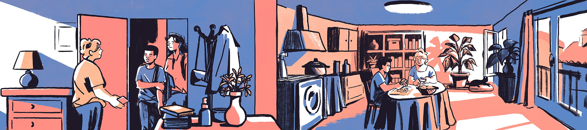
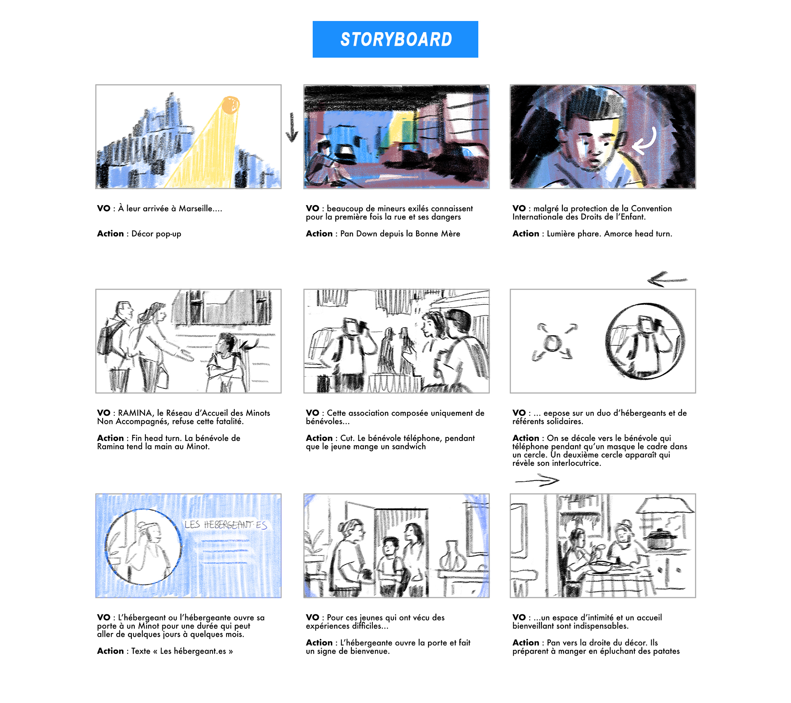
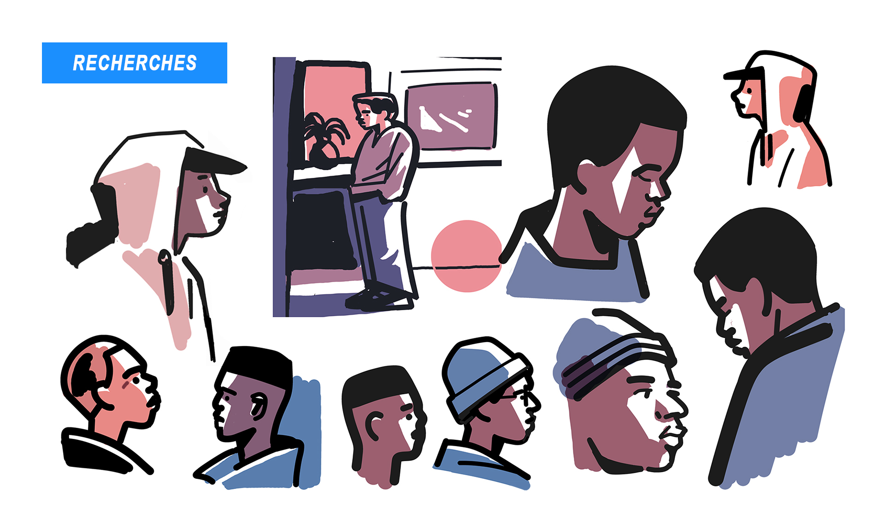
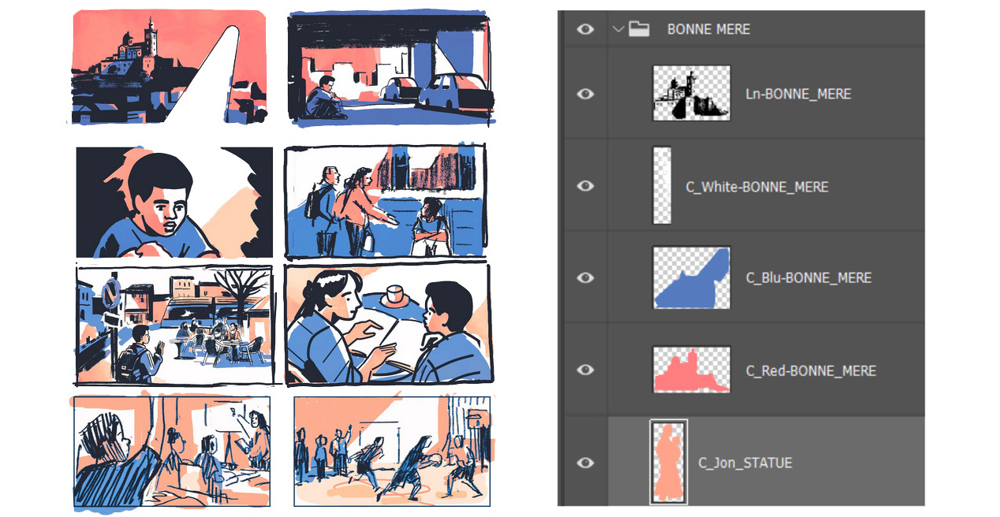
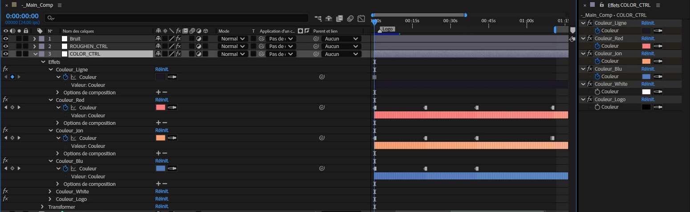
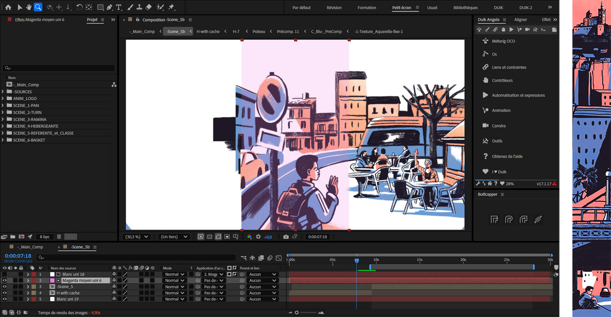

Animation
- Ramina
Année : 2025
J'ai réalisé une vidéo de présentation pour Ramina (Réseau d’Accueil des Minots Non Accompagnés).
Cette association marseillaise constituée uniquement de bénévoles organise la solidarité pour les Mineurs Non Accompagnés en situation de migration.
La vidéo présente le fonctionnement de l’association qui repose sur le duo hébergeant·e/référent·e, tout en évoquant l’éventail plus large d’activités mises en place par Ramina (cours de français, activités sportives et culturelles, aide juridique…)
Le but est aussi de susciter des vocations chez de potentiels bénévoles, en montrant la nécessité de l'accueil des MNA, leur quotidien et celui des solidaires qui les accueillent.

{kind=link}
{kind=link}
{kind=link}

{kind=link}
{kind=link}



Pour accentuer le réalisme du Pan du début, j'ai décidé d'utiliser des modèles 3D d'immeubles libres de droit (trouvés sur fab.com).
J’ai animé un mouvement de cam pour avoir un parallax des immeubles et j’ai rotoscopé cette référence pour avoir un rendu 2D.


Lors de la réalisation des illustrations, chaque calque de couleur était nommé selon une convention précise.
{kind=link}


J’ai adapté l’entièreté de la vidéo au format reel pour les réseaux sociaux de Ramina. En modifiant les mouvements de caméra, les animations de texte et les transitions.
